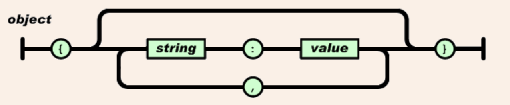
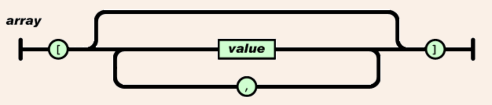
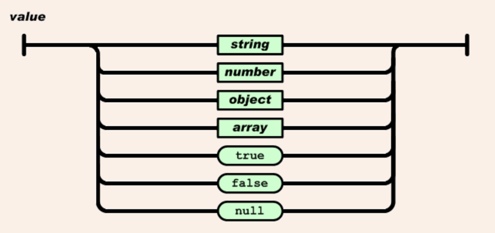
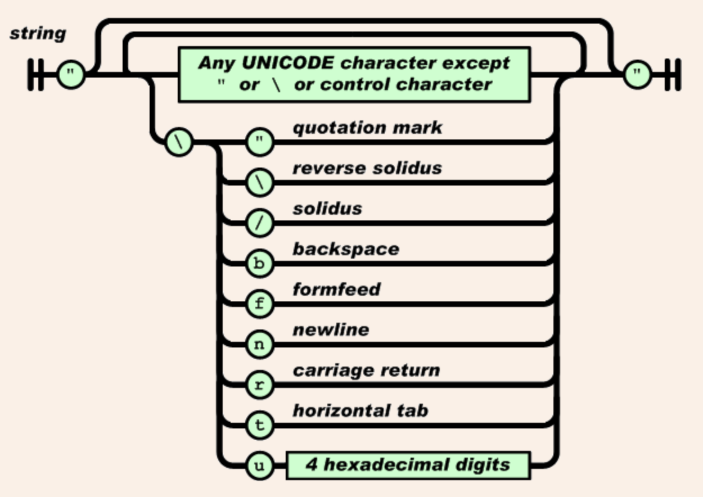
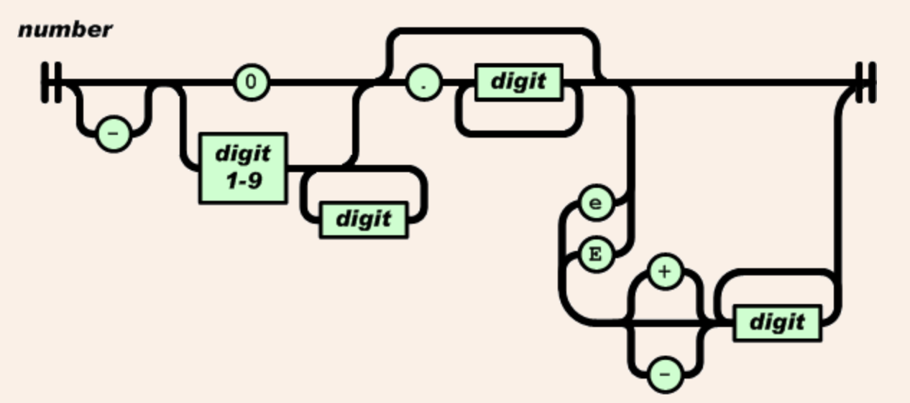

配置文件五分钟入门
作为一名开发者，我们总是避免不了和代码打交道。人们总是过多地关注整个系统的架构，以及性能优化等方面，而忽视了许多基本的东西，认为学习这些东西没有太多的意义，其中就比如配置文件。 但其实，很多正规软件，包括大公司商业化软件和开源软件，启动时第一件事情就是去加载配置文件，以初始化相关运行环境及控制软件的行为。很多初级程序员…
配置文件五分钟入门
作为一名开发者，我们总是避免不了和代码打交道。人们总是过多地关注整个系统的架构，以及性能优化等方面，而忽视了许多基本的东西，认为学习这些东西没有太多的意义，其中就比如配置文件。
但其实，很多正规软件，包括大公司商业化软件和开源软件，启动时第一件事情就是去加载配置文件，以初始化相关运行环境及控制软件的行为。很多初级程序员，比如刚开始学习编程的新手，往往不会写相关配置，或者一把梭将配置硬编码在程序里。这样不仅导致每次系统稍微改动，就得重新编译程序，而且在代码可读性及可维护性上都不是特别好。
常见的配置文件格式有 JSON、XML、YAML/YML、TOML、HCL、properties、props、prop 等。本文重点介绍下前四种更常用的格式。
JSON
JSON 是一种轻量级的数据交换格式，全称为 JavaScript Object Notation。其便于人们读写，也便于计算机解析和生成。JSON 是 Javascript 的一个子集，但 JSON 是独立于语言的文本格式，并且采用了类似于 C 语言家族的一些习惯，这些属性使 JSON 成为一个理想的数据交换语言。
JSON 有两种结构：
- 一个键值对的集合。在许多语言中，这被实现为一个对象、结构体、字典、哈希表等。
- 一个序列化的值列表。在许多语言中，这被实现为一个数组、向量、链表等。
在 JSON 中，一个对象就是一个未排序的键/值对集合。起始于{并结束于}，每个键后跟一个:，每个键/值对以,分隔。

数组是值的有序集合，以[开始并以]结束，每个元素以,分隔。

一个值可以是双引号括起来的字符串、数字、true、false、null，或者是一个对象或数组。这种结构是可以嵌套的。

字符串是以双引号括起来的零或多个 Unicode 字符的序列，使用反斜杠进行转义。字符相当于只有一个字符的字符串。

数字很像 C 或 Java 中的数字，只是不使用八进制和十六进制。

XML
XML 是一种自描述型、易于阅读、创建、扩展的标记语言。XML 文档形成了一种树结构，从根部开始，然后扩展到枝叶。一个简单的 XML 文档例子如下：
<?xml version="1.0" encoding="ISO-8859-1"?>
<note>
<to>George</to>
<from>John</from>
<heading>Reminder</heading>
<body>Don't forget the meeting!</body>
</note>
其中，第一行是 XML 声明，它定义了所使用的 XML 版本和字符集。
note、to、from、heading、body 等都是自定义标签，可以根据具体需求来选择不同的标签，以说明其值所代表的意义，这一点体现了 XML 良好的自我描述性。需要注意的是，标签可以嵌套，且每个标签都必须是闭合的。
一些常见需要注意的地方：
- 标签对大小写敏感。
- 标签必须被正确地嵌套。
- XML 文档必须要跟标签。
- 标签的属性值必须加引号。
- XML 中，预定义了
>、<、&、"、'五个实体引用，当 XML 元素中需要出现这些实体时，需要分别用<、>、&、"、'代替，否则会出现错误。 - XML 的注释与 HTML 类似：
<!-- something -->。 - 标签命名和 C 类似，但不能包含 "XML" 和空格。
YAML/YML
YAML(/ˈjæməl/) 是 "YAML Ain't Markup Language"（YAML 不是标记语言）的递归缩写，是一种人类友好的数据序列化标准，支持所有编程语言。他们的官网很有新意，采用 YAML 本身编写，上面列出了所支持的编程语言对应的库，可以去看看。
语法
YAML 提供缩进／区块以及内置（inline）两种格式，来表示数组和对象。另外，YAML 还支持单个变量。#表示注释。
数组
数组也称为列表、清单。习惯上数组比较常用区块格式（block format）表示，也就是用短杠+空白字符作为起始。
--- # fruit list
- apple
- banana
- watermelon
另外还有一种内置格式（inline format）可以选择──用方括号围住，并用逗号+空白区隔（类似 JSON 的语法）。
--- # color list
[red, blue, yellow]
也可以写一个子数组：
- animal
- cat
- dog
- fish
- plant
- flower
- grass
- tree
对象
对象通常也称为字典、映射、哈希。键值和数据由冒号及空白字符分开。区块形式（常使用于 YAML 数据文档中）使用缩进和换行符分隔 key: value 对。内置形式（常使用于 YAML 数据流中）在大括号中使用逗号+空白字符分隔 key: value 对。
--- # 区块形式
name: sbrave
age: 18
sex: male
--- # 内置形式
{name: sbrave, age: 18, sex: male}
符合结构
对象和数组可以结合使用，也可以嵌套，形成符合结构：
author:
- smart
- brave
纯量
纯量是最基本的、不可再分的变量。包括：字符串、布尔值、整数、浮点数、NULL、时间、日期。
str: hello world # not need quotation marks
number: 100 # int number
fnumber: 3.14 # float number
flag: true # bool value
point: ~ # NULL
time: 2018-07-11t11:28:50.10-05:00
day: 2018-07-11
引用
锚点 & 和别名 * 可以用来引用：
people:&people
- name
- age
- sex
XiaoMing:
<<: *people
& 用来建立锚点，<< 表示合并到当前数据，* 用来引用锚点。
TOML
TOML 全称为 Tom's Obvious, Minimal Language。其语法广泛地由 key = "value"、[节名]与 # 注释构成，支持以下数据类型：字符串、整形、浮点型、布尔型、日期时间、数组和图表。
这是一个例子：
# This is a TOML document.
title = "TOML Example"
[owner]
name = "Tom Preston-Werner"
dob = 1979-05-27T07:32:00-08:00 # First class dates
[database]
server = "192.168.1.1"
ports = [ 8001, 8001, 8002 ]
connection_max = 5000
enabled = true
[servers]
# Indentation (tabs and/or spaces) is allowed but not required
[servers.alpha]
ip = "10.0.0.1"
dc = "eqdc10"
[servers.beta]
ip = "10.0.0.2"
dc = "eqdc10"
[clients]
data = [ ["gamma", "delta"], [1, 2] ]
# Line breaks are OK when inside arrays
hosts = [
"alpha",
"omega"
]
&& 各种格式的比较 -->